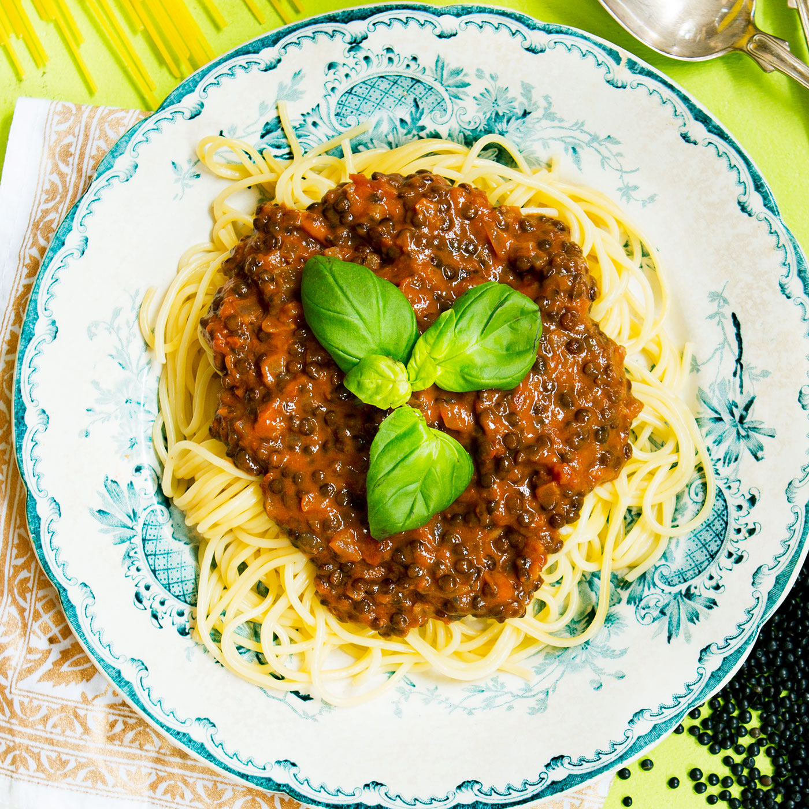

Bolognese

Description
An italian classic here in a climate-friendly vegetarian version guaranteed to delight your taste buds!
Ingredients
- 2 cans of tomatoes, crushed
- 2 onions
- 1 tbs of thyme
- 1 tbs of rosemary
- 1 bouillon cube
- 3 dl beluga lentils
Steps
- Chop the onions and fry in an oiled pan until soft
- Add the spices. Fry a couple minutes more.
- Add the rest of the ingredients. Let simmer for 20 minutes.
- Enjoy!